Project Overview
Phlint is a retail analytics company. Its product monitors traffic and gathers analytics from customers through their in-store interactions, and visualizes the insights to get the right dataset to help companies to understand customers behaviors, to optimize marketing efforts and to increase sales.
MY ROLE
researcher
UI/UX designer
PLATFORM
web app
My task |
Design Phlint retail focused application-dashboard to visualize store performance data for better in-store experience. |
Design iterations
Wireframes The dashboard contains: Overview, Store Performance, Maintenance View, Admin. I mainly designed 4 different map view of a brand retail stores performance, from globally to locally, by different period of time. The data will change according to each element.
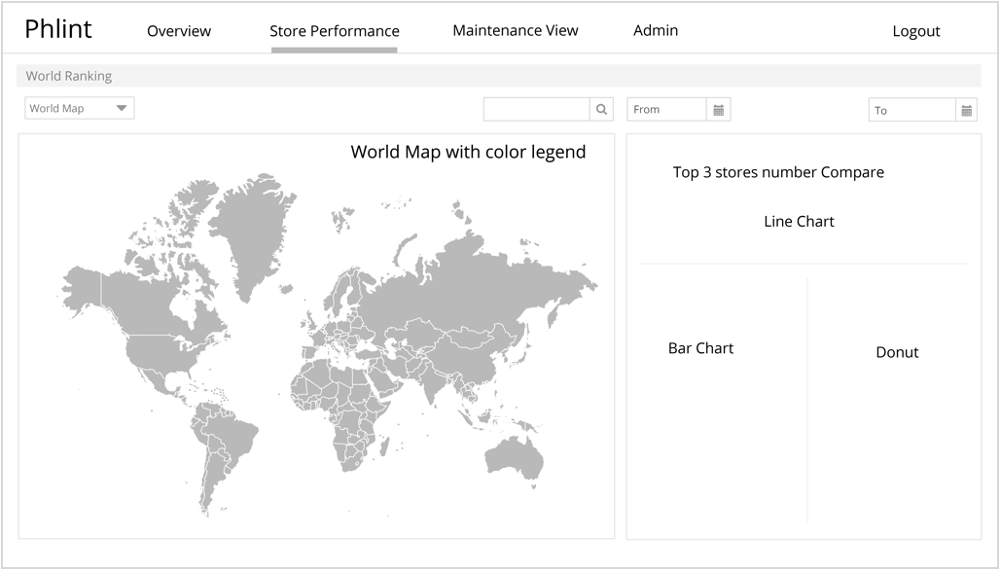
store performance - world ranking
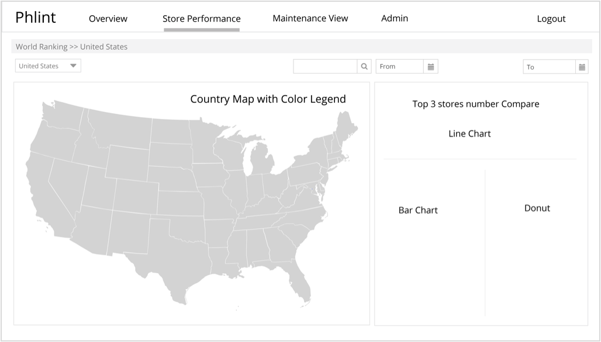
store performance - country ranking
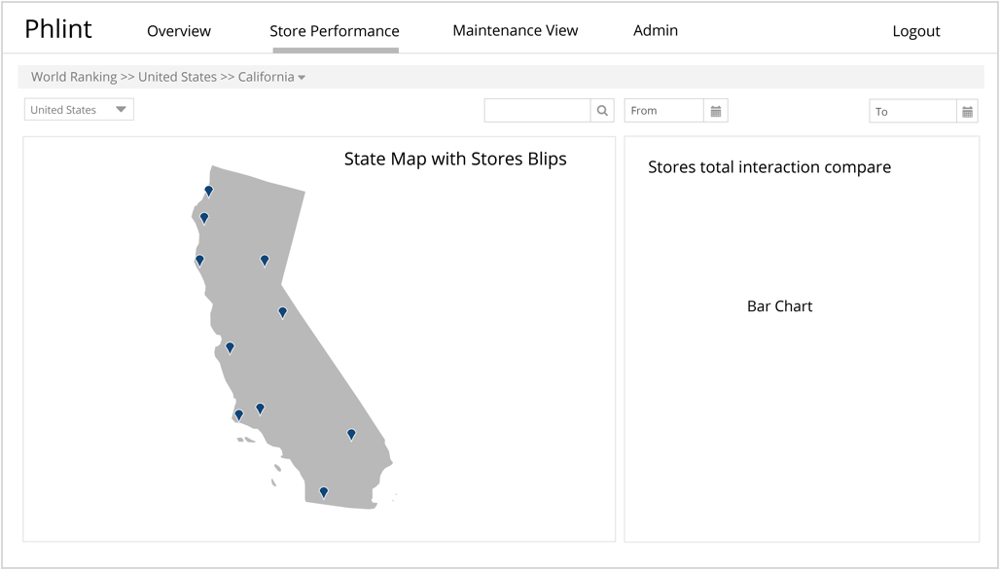
store performance - state ranking
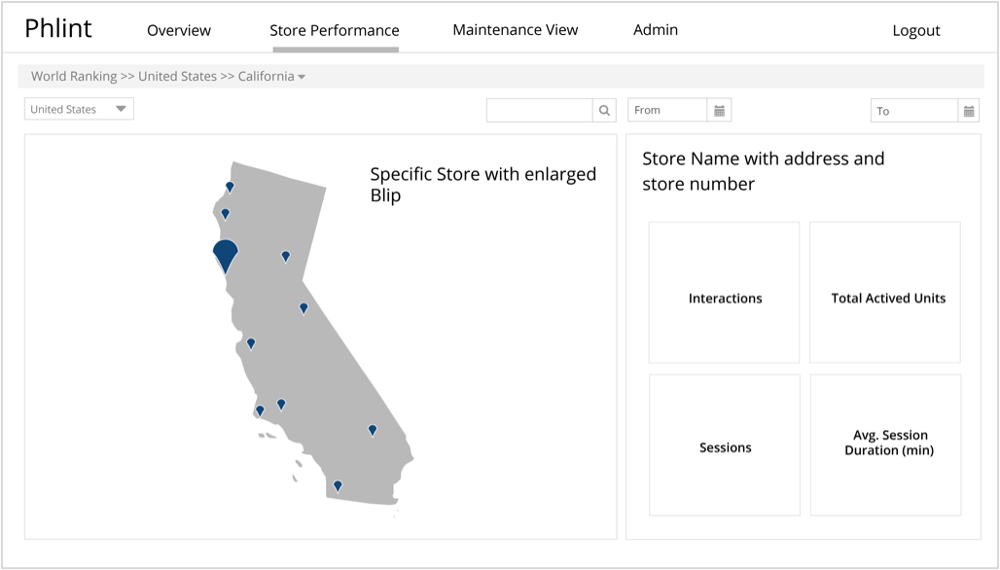
store performance - store dataset
Considerations
- How to design the navigation to maximize the size of the map for better view
- What kind of dataset to show in the dashbaord under different map view and search result and how to show them
- What’s the best way to interact with the map and transit to different map view
- What kind of search suggestion to show when users search certain types of information
Hi-Fi Design After some research, we decided to break down the dataset to 3 groups: total interactions, total sessions, and total duration over different regions and time. Based on the content, I designed 2 versions of the dashboard.
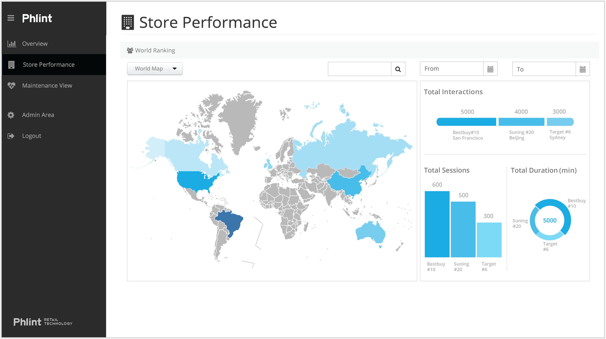
version 1
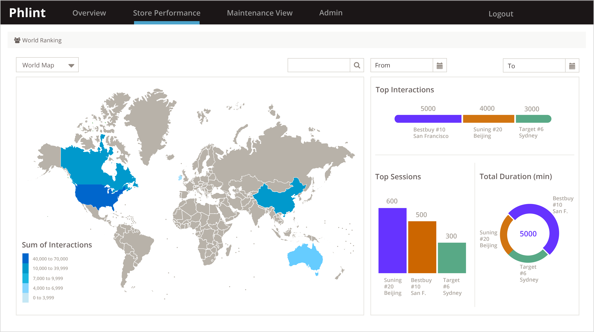
version 2
Final Design
I chose version 2 to to be the final layout as there would be more room for the map and charts. The color set for the 2nd layout is more vivid and easy to scan.
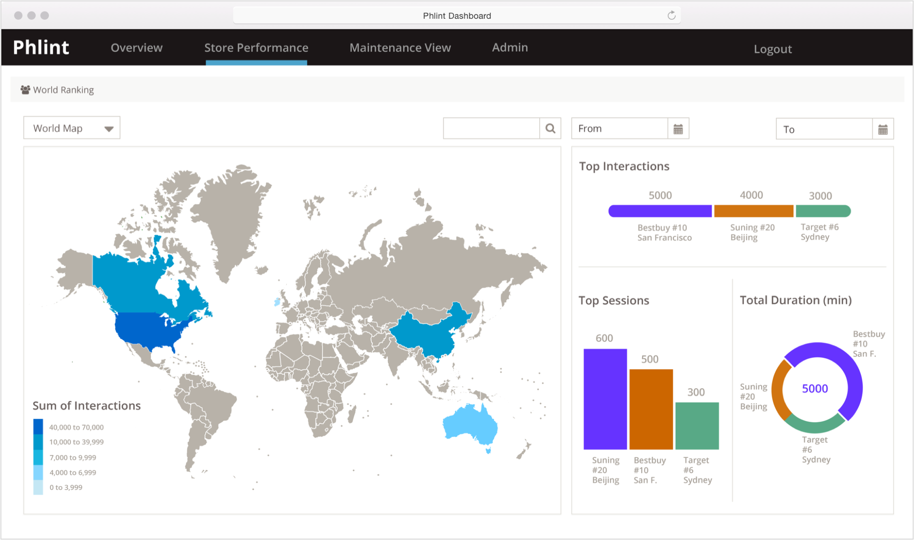
store performance global view with top 3 performance stores
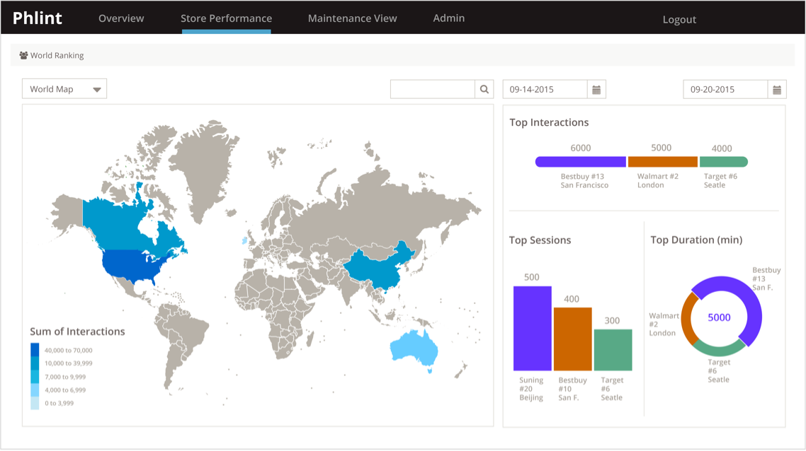
store performance global view within a time frame
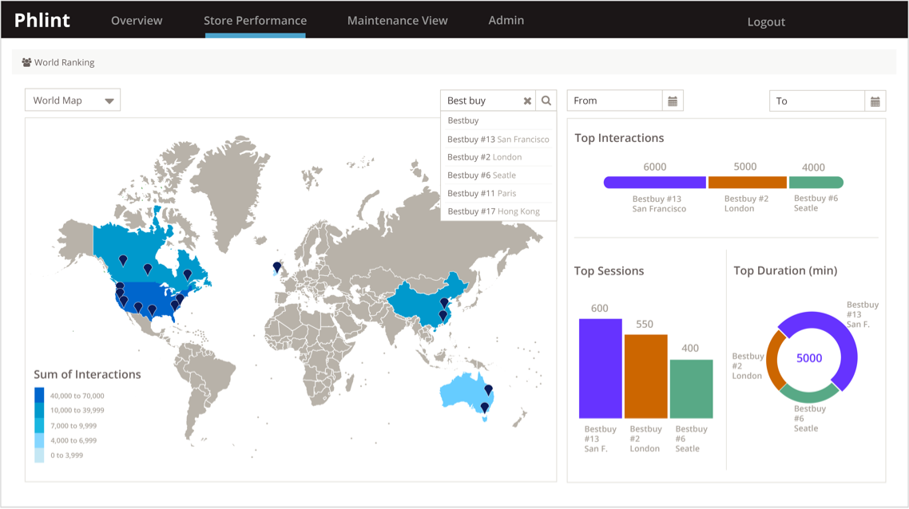
search by store name, list by ranking order
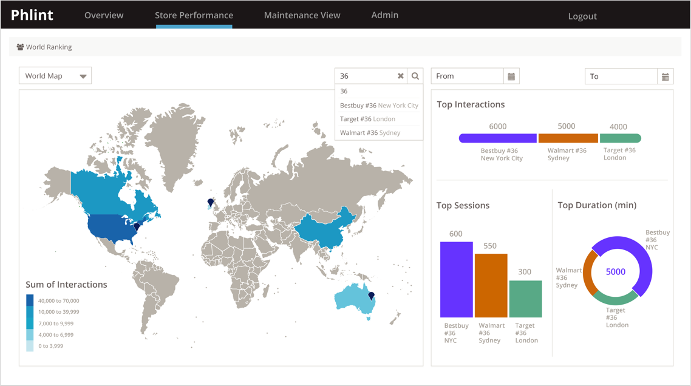
search by store number
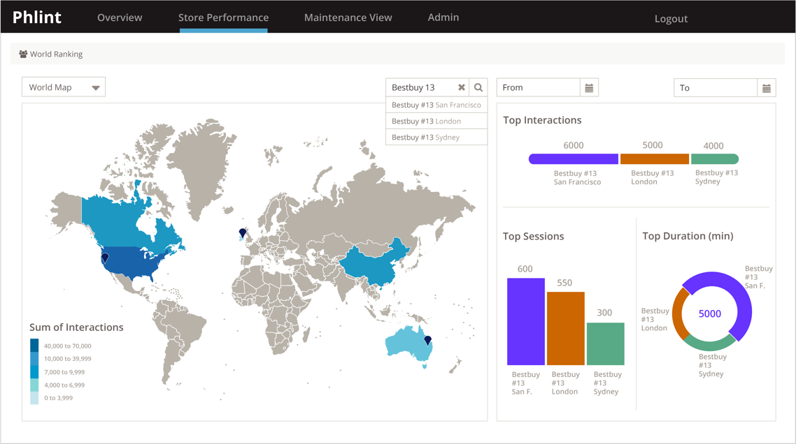
search by store name and number
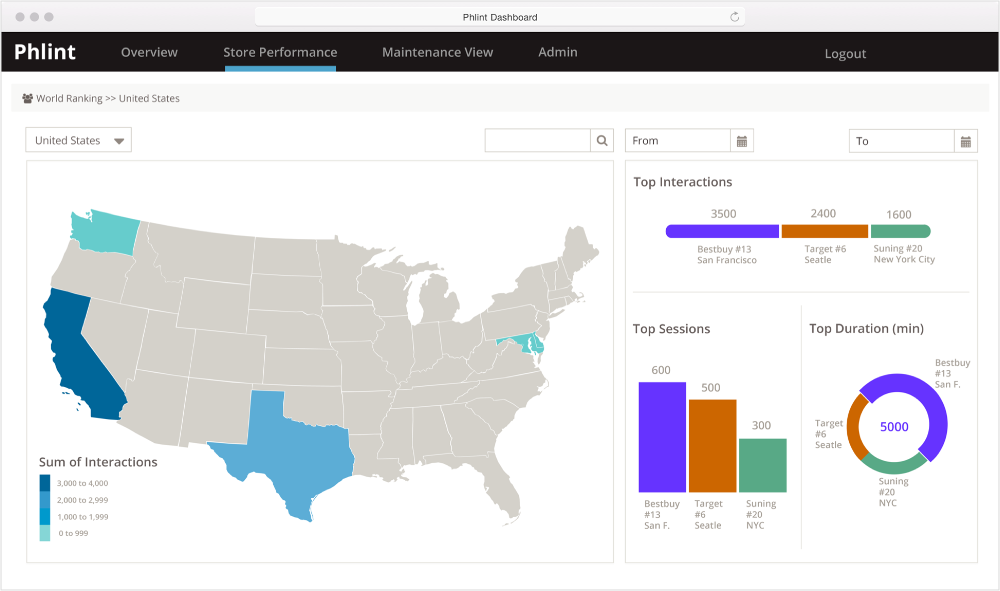
store performance by country
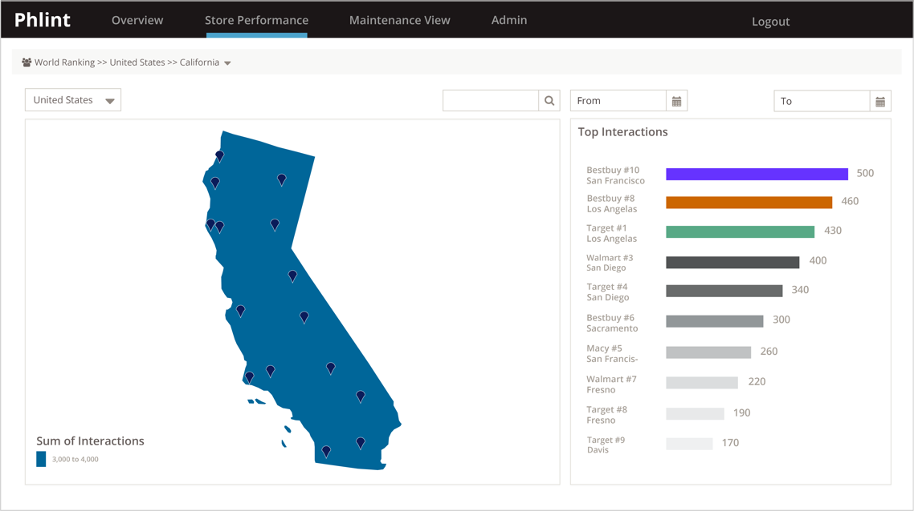
state view with top 10 stores
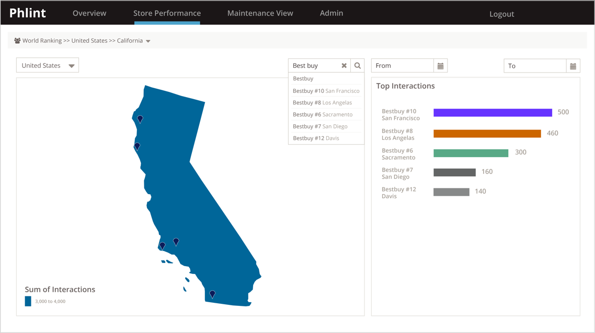
search by store name in state
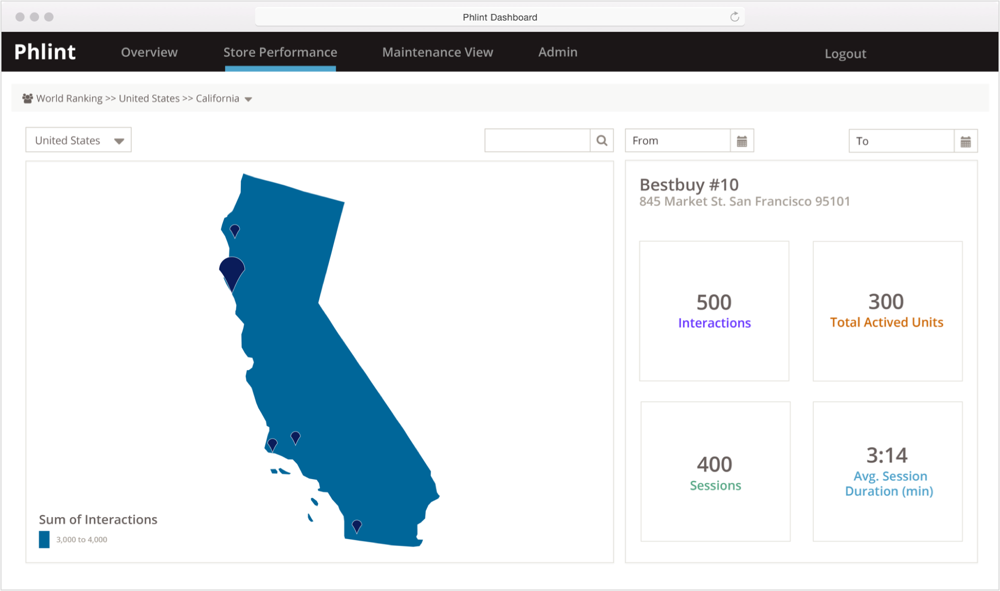
detailed store performance
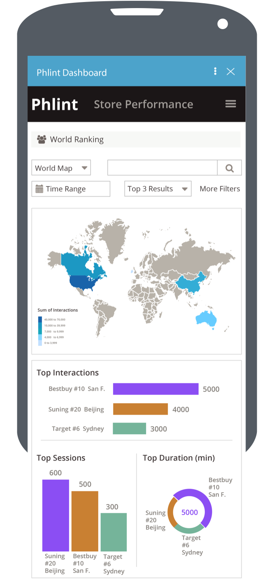